Mes réalisations
Infographie TikTok
Infographie sur TikTok réalisée en cours de communication digital.
Réalisé sur Figma
Infographie TikTok
Infographie sur TikTok réalisée en cours de communication digital. Utilsation de la charte graphique tiktok et de son logo. Informations à but de l'utilisation de la plateforme pour un meilleur contrôle sur le calendrier éditorial de publication d'une marque ainsi que sa cible.
Réalisé sur Figma
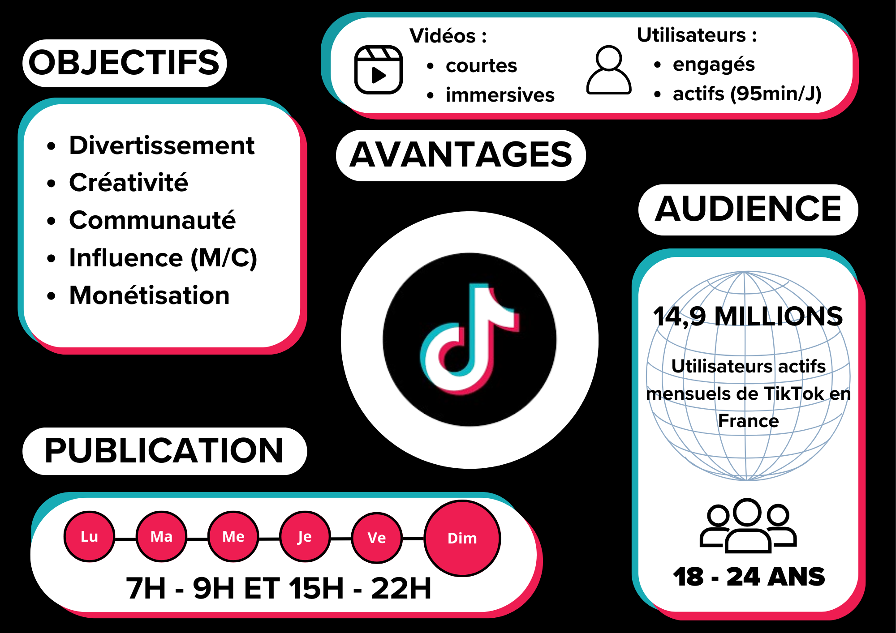Logo OCHome
Logo d'une entreprise fictive de personnalisation de porte d'entrée.
Réalisé sur Adobe Illustrator
Logo OCHome
Logo d'une entreprise fictive de personnalisation de porte d'entrée. Utilisation de la couleur orange pour la chaleur et le dynamisme, le gris pour la neutralité et la sobriété. La porte d'entrée est un élément important pour une maison, elle est le premier élément visible. Le logo doit donc être simple, lisible et représentatif de l'activité de l'entreprise.
Réalisé sur Adobe Illustrator
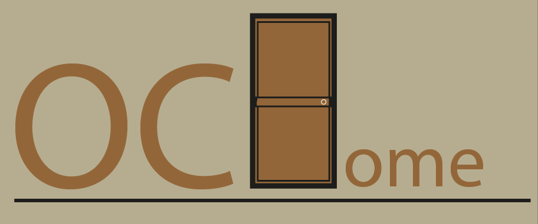Réalisation Kunel Gaur
Réalisation inspirée de Kunel Gaur, une boite de flageolets.
Réalisé sur Adobe Illustrator et Photoshop
Réalisation Kunel Gaur
Réalisations inspirées de Kunel Gaur. Le concept des emballages noir et blanc simples de GAUR repose sur une esthétique minimaliste et luxueuse. En supprimant les couleurs et les éléments graphiques superflus, ces emballages mettent en avant l’élégance, la pureté et l’intemporalité du produit. L'utilisation du noir et blanc crée un contraste fort qui évoque le raffinement, la sobriété et une image haut de gamme. Ce choix de design permet également de se démarquer visuellement en rayon tout en reflétant une approche moderne et épurée du packaging.
Réalisé sur Adobe Illustrator et Photoshop
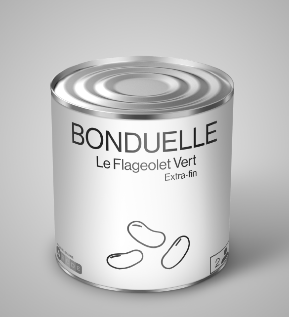 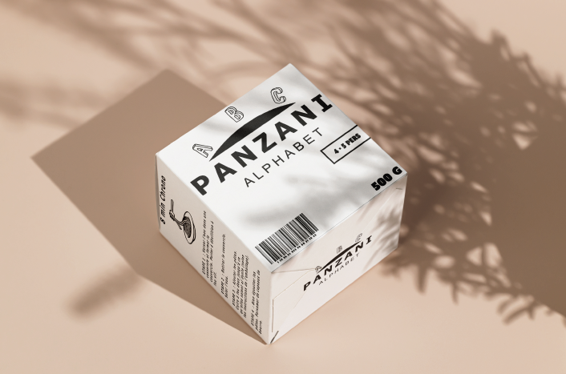 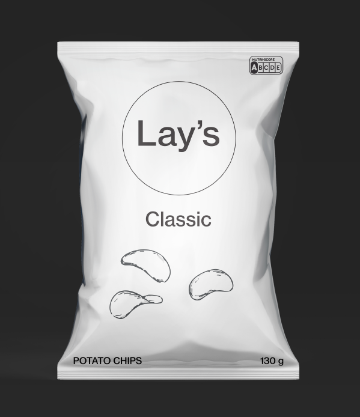 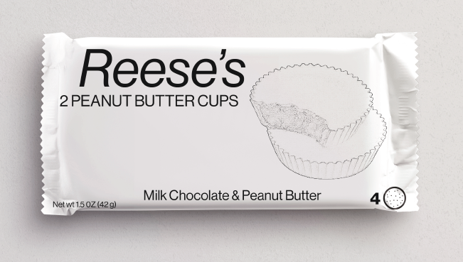Page Chef Cuisine
Mise en place d'élément sur Indesign, création de double page de présentation de chef de cuisine et recette attribuée.
Réalisé sur Indesign
Réalisation Indesign présentation gastronomique
Mise en place d'élément sur Indesign, création de double page de présentation de chef de cuisine et recette attribuée.
Réalisé sur Adobe Indesign
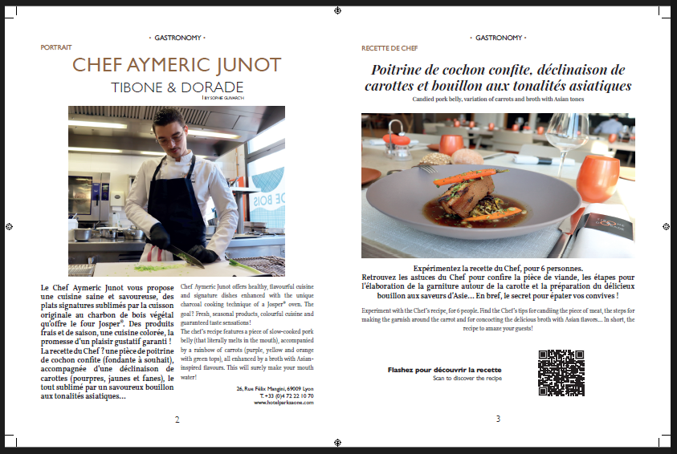 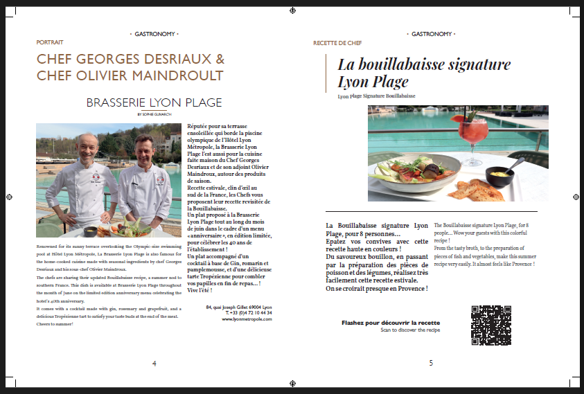Mod Minecraft personnalisé
Projet de mod Minecraft personnel, création de texture, model 3D, procédures(fonctions), paramétrage, interface visuelle
Réalisé sur MCreator et Blockbench 3D
Création de contenu de mod Minecraft
Je conçois des modèles 3D avec Blockbench et les intègre dans des mods Minecraft à l’aide de MCreator. Ce processus me permet de créer des objets, des blocs, des créatures et d'autres éléments interactifs pour enrichir l’expérience de jeu. Je travaille sur la modélisation 3D, le texturing, l’animation et la configuration des fonctionnalités des éléments ajoutés. Grâce à MCreator, j’optimise également les interactions en jeu en ajustant les propriétés et comportements des objets créés.
Réalisé sur Blockbench et MCreator
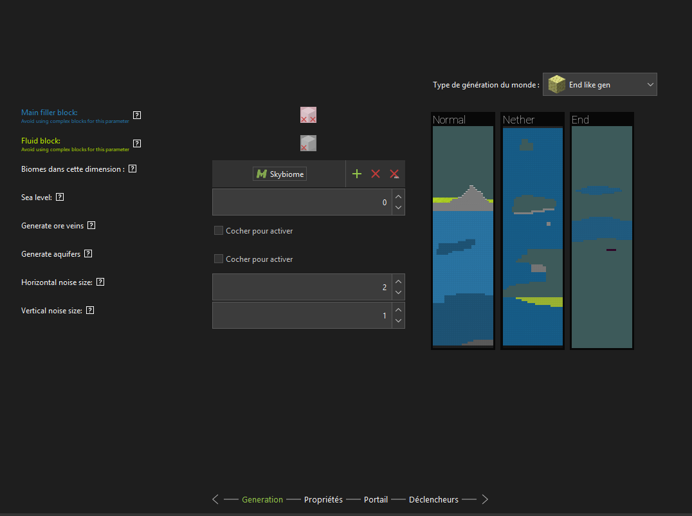 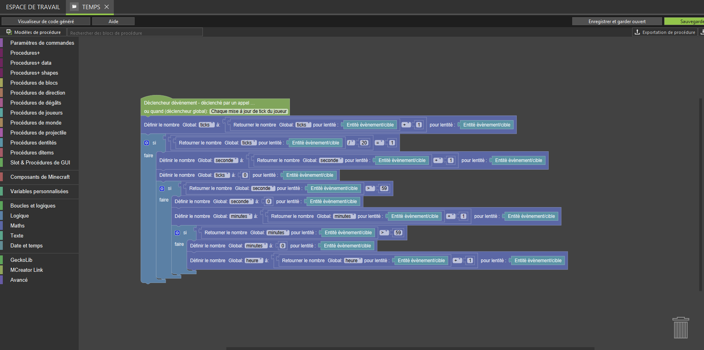 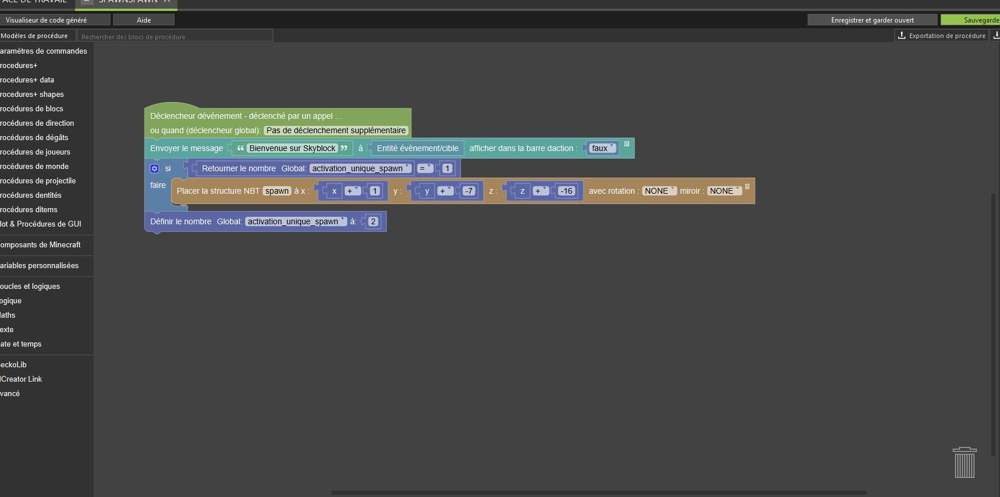 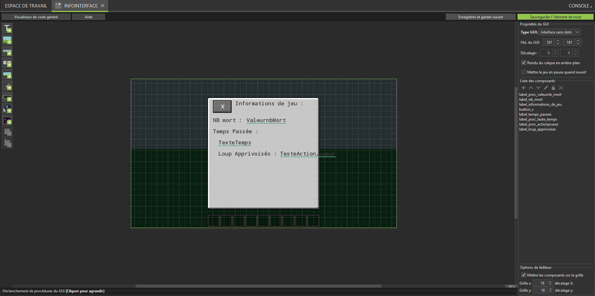Site Sikalobi
Création, configuration entière d'un site internet appelé SIKALOBI, une association au service de Kinshasa et basée à Nancy.
Réalisé sur Wordpress, Elementor Pro
Réalisation d'un site internet complet
Dans le cadre d’un projet de groupe, nous avons conçu le site web d’une association sous WordPress avec Elementor et refondu son identité visuelle. En contact direct avec l’association, nous avons créé un design moderne et intuitif, défini une nouvelle charte graphique (logo, couleurs, typographies) et intégré des fonctionnalités clés (actualités, événements, formulaire de contact). Ce projet nous a permis de travailler sur l’expérience utilisateur, la cohérence visuelle et la gestion de projet en collaboration avec un client réel.
Réalisé sur Wordpress, Elementor Pro
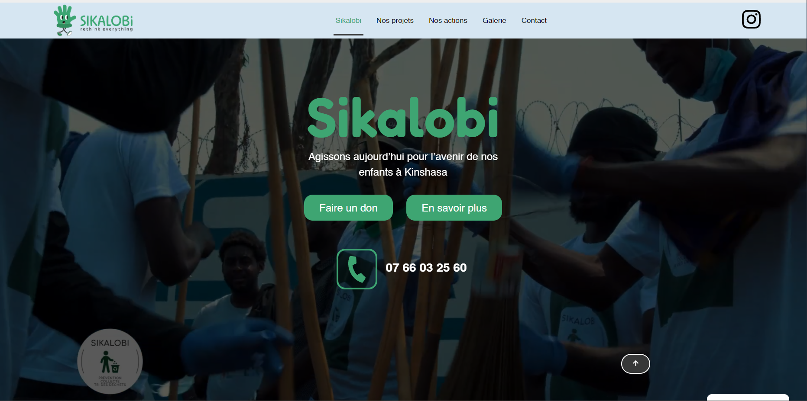 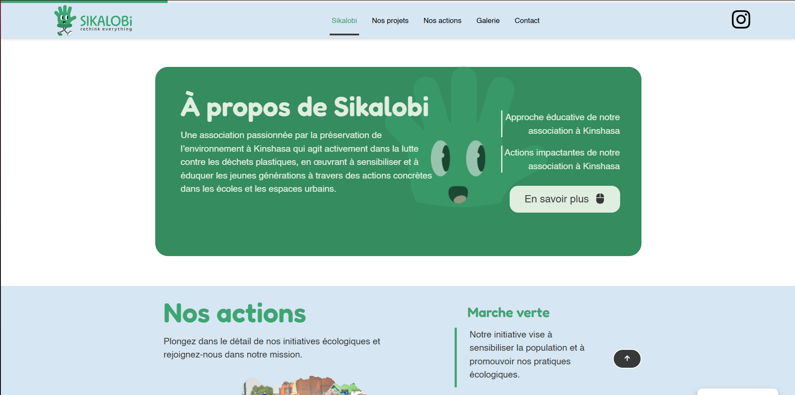 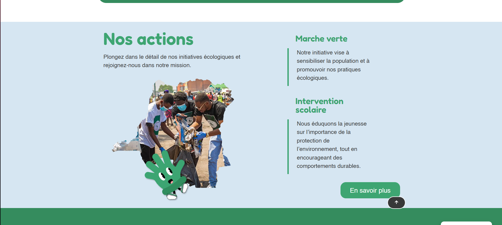 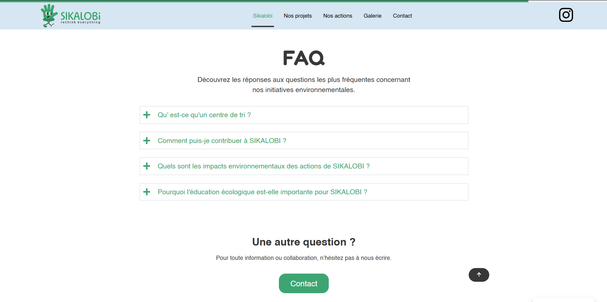 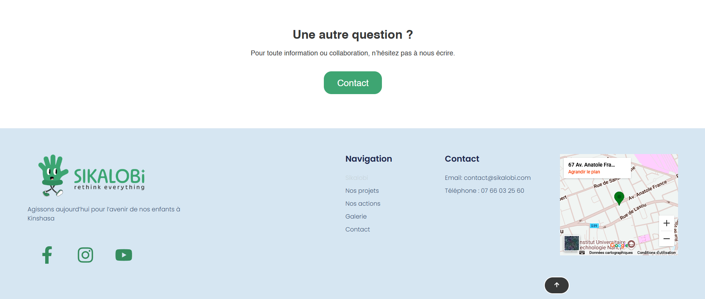 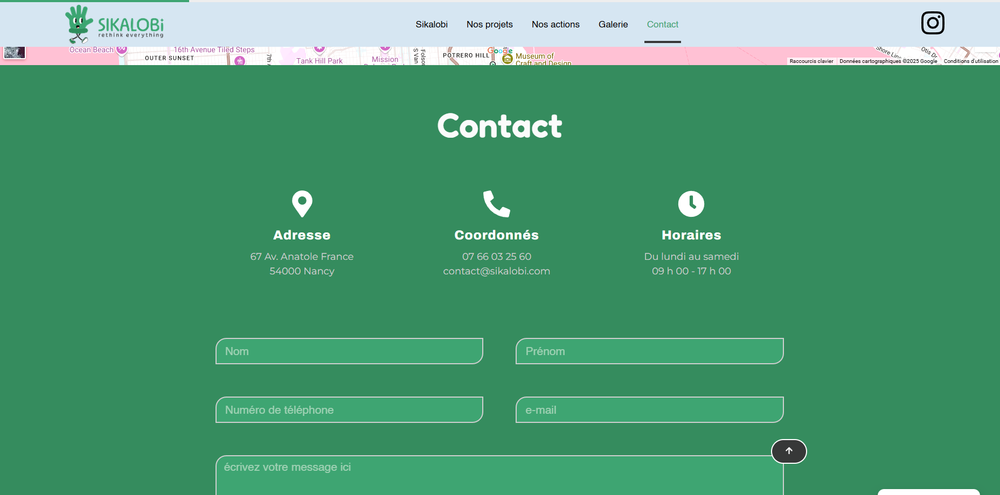 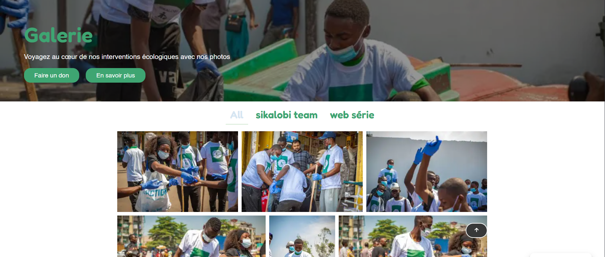Formulaire de connexion
Création, configuration entière d'un formulaire de connexion en PHP et SQLite
Réalisé sur Xampp, VS Code
Réalisation d'un formulaire d'incription/connexion
Voici un formulaire codé en PHP, HTML, CSS, JavaScript et SQLite. Une première page d'inscription permet d'entrer un nom, un prénom, un identifiant unique et un mot de passe. Ces données sont transmises et enregistrées dans une base de données SQLite, à condition que l'identifiant ne soit pas déjà utilisé. Ensuite, le formulaire de connexion permet, grâce à vos identifiants, de vous reconnaître et d'afficher votre nom et prénom sur une page de bienvenue. Ajouts prévus dans une prochaine version : cryptage et décryptage du mot de passe, mise en place d'une fonction "mot de passe oublié".
Réalisé sur Xammp, VisualStudio Code
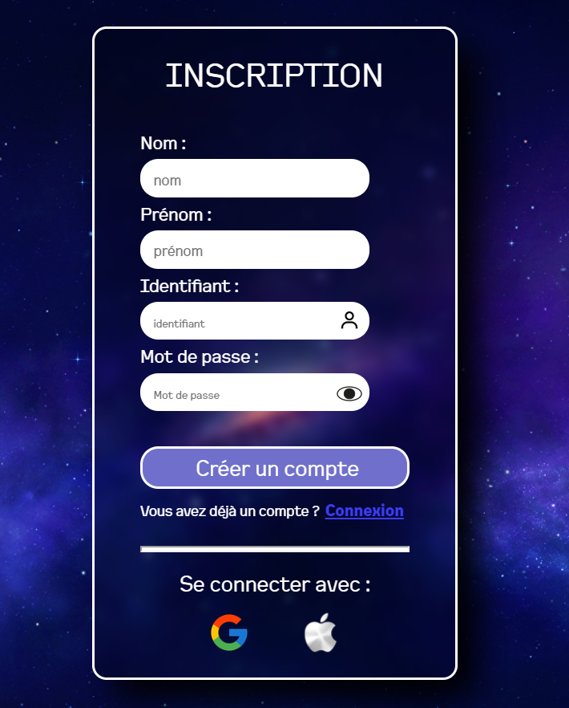 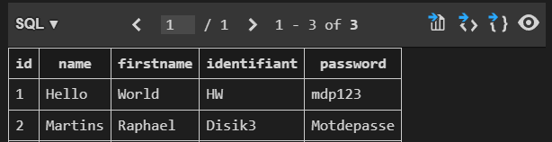